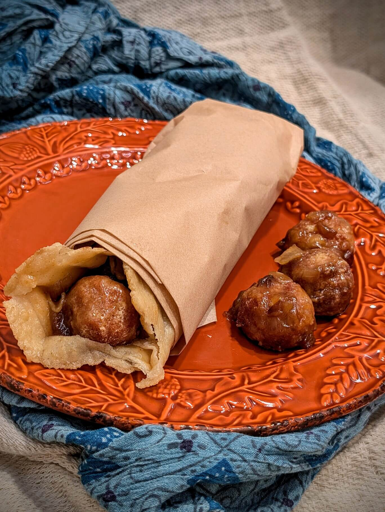

Chouta

Description
This is probably the best street food recipe you will ever try. Just imagine, some fried flangria from who knows where, but they’re delicious, because they are fried. Wrap them in your favorite flatbread, preferably from lavis, and slather it with gravy. There you go gancho, that’s some fine chouta.
Ingredients
Gravy
- 1/4 cup coconut oil
- 2 onions, diced
- 1 tsp salt
- 1/2 tsp garam masala
- 1/2 tsp ground cumin
- 1/2 tsp ground coriander
- 4 cloves garlic, minced
- 2 1/2 cups water, divided
- 2 tbsp oyster sauce
- 3 tbsp corn starch
Flangria (meatballs)
- 1 12 oz. can low sodium luncheon meat (Spam)
- 2 cloves garlic
- 1/2 onion
- 1/2 tsp ground coriander
- 1/2 tsp ground cumin
- 1 egg
- 1 1/4 cup Mexican-style corn flour (Maseca), divided
- 1 cup water
- Vegetable oil for frying
Cremling claws (soft shell crabs)
- 5 soft shell crabs
- 1 cup Mexican-style corn flour (Maseca), divided
- 1/2 tsp salt
- 1 cup water
- Vegetable oil for frying
Bread
- 2 cups Mexican-style corn flour (Maseca)
- 1 1/2 cups water, plus additional as needed
- Vegetable oil for frying
Steps
- For the gravy, melt the coconut oil in a frying pan over low heat. Add the 2 diced onions and 1 tsp salt. Continue cooking, stirring occasionally, for 30-45 minutes or until golden brown.
- Meanwhile, for the flangria option, combine the Spam, 2 cloves garlic, 1/2 onion, 1/2 tsp coriander and 1/2 tsp cumin in a food processor. Process until combined. Add 1 egg and process until combined. Add 1/2 cup Maseca and mix until combined. I prefer to process for a few seconds, then finish mixing with a spoon. Form into 1 inch balls. Set aside.
- For the cremling claws option, defrost and clean 4 soft shell crabs. Rinse the crabs, then pat dry. Mix together 1/2 cup maseca and 1/2 tsp salt in a bowl, and toss the crabs in the maseca to coat them.
- For both flangria and cremling claws options, fill a frying pan, pot, or deep fryer at least 2 inches deep with vegetable oil. Heat to 350 degrees Fahrenheit. Combine 1/2 cup Maseca and 1 cup water in a bowl to form a batter. Coat the flangria balls or crabs in batter, then deep fry for 2-3 minutes until golden brown. For the cremling claws, flip once while frying to cook both sides. Once the flangria or cremling claws are cooked, remove from oil and let drain on paper towels.
- For the bread, combine 2 cups maseca and 1 1/2 cups water. Knead well. If it's too dry, knead in a little more water. You should be able to press a ball of dough into a thick disk without the edges cracking.
- Form 1/2 cup of dough into a ball. Place between two sheets of parchment paper, then roll into a 8 inch circle. Cook on a griddle or dry pan over medium high heat, flipping once. Both sides should have just a couple spots of brown. Repeat with the rest of the dough.
- One at a time, fry the bread in the 350 degree oil, flipping once, for not too long. The bread should puff and stiffen, but not get crispy. Remove and let drain on paper towels.
- For the gravy, once the onions are browned, add 1/2 tsp garam masala, 1/2 tsp cumin, 1/2 tsp coriander, and the 4 cloves minced garlic. Cook 2 minutes over medium-high heat. Add 2 cups water and 2 Tbsp oyster sauce, then bring to a boil. In a separate small container, combine 1/2 cup water and 3 tbsp corn starch, mix well. Add to onion mixture, then cook and stir until thickened.
- To assemble chouta, take a piece of bread, place 4 flangria balls in a line (or 1 crab). Cover with a few spoonfuls of gravy, then wrap bread closed. Wrap in parchment paper if desired.
Credits to jozomby for the recipes
Back to home page